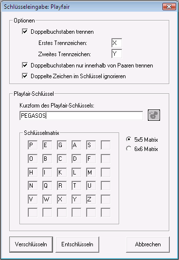

Sie erreichen diesen Dialog über den Menüeintrag Ver-/Entschlüsseln \ Symmetrisch(klassisch) \ Playfair.

Die Option Doppelbuchstaben trennen bewirkt, dass zwei aufeinander folgende, identische Buchstaben durch ein Trennzeichen voneinander gertrennt werden. Per Voreinstellung wird stets das erste Trennzeichen verwendet. Sind die zu trennenden Buchstaben und das Trennzeichen aber identisch, wird das zweite Trennzeichen verwendet (so wird zum Beispiel "AA" durch "AXA" und "XX" durch "XYX" ersetzt, wenn die Trennzeichen als "X" und "Y" definiert sind).
Wenn Sie die Option Doppelbuchstaben nur innerhalb von Paaren trennen auswählen, werden Doppelbuchstaben nur dann getrennt, wenn sie ein Paar bilden (zum Beispiel wird "HOFFEN" durch "HOFXFEN" ersetzt, "AFFE" wird hingegen nicht verändert).
Die Option Doppelte Zeichen im Schlüssel ignorieren beeinflusst die Art und Weise, wie das Passwort in die Matrix eingetragen wird. Ist sie aktiviert, werden doppelte Buchstaben im Passwort einfach ignoriert. Andernfalls wird jeweils der nächste freie Buchstabe im Alphabet benutzt.
Im Feld Kurzform des Playfair-Schlüssels können Sie das gewünschte Passwort eingeben. Mit dem Button können Sie einen im Schlüsselspeicher gespeicherten Schlüssel direkt einfügen (falls der Button blass dargestellt ist, steht kein Schlüssel zur Verfügung).
Mit den Radiobuttons 5x5 Matrix und 6x6 Matrix können Sie auswählen, ob der Playfair-Algorithmus mit einer 5x5 oder 6x6 Matrix arbeiten soll. Siehe dazu die Erklärung zum Playfair-Verschlüsselungsverfahren.
Mit dem Button Verschlüsseln können Sie das aktuelle Dokument mit dem eingegebenen Schlüssel verschlüsseln, mit dem Button Entschlüsseln können Sie es entschlüsseln.